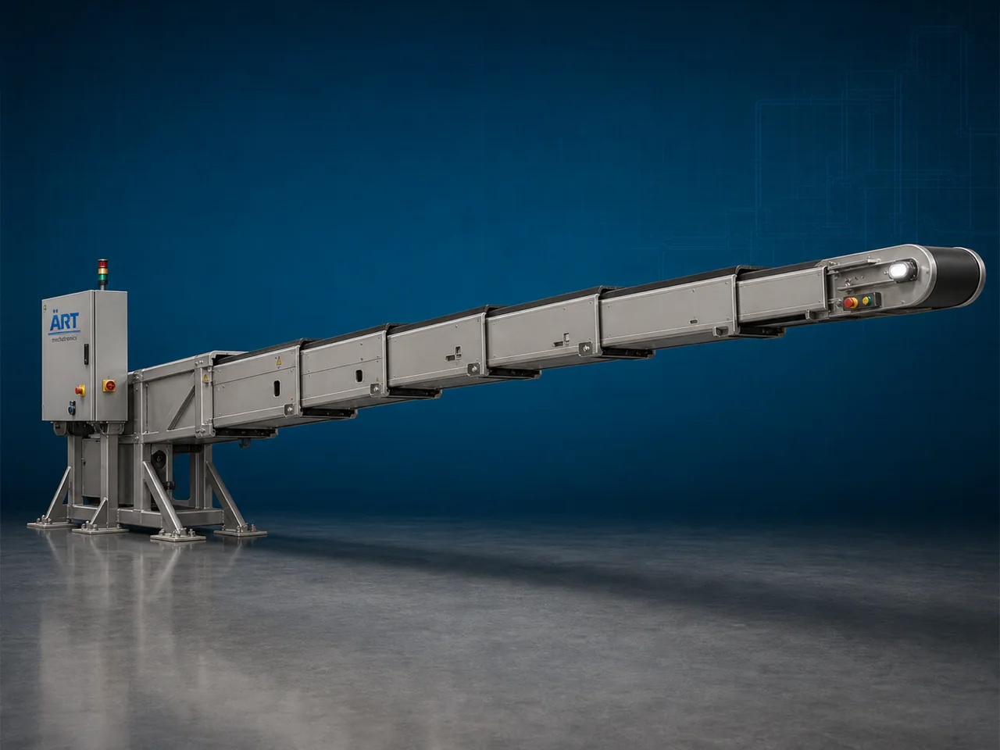

Telescopic Conveyor Machine (Industrial Loading, Unloading & Extendable Material Handling System)
A Telescopic Conveyor Machine, also known as an Industrial Telescopic Conveyor or Extendable Belt Conveyor System, is a highly advanced industrial material handling equipment designed for efficient loading, unloading, transfer, and movement of cartons, sacks, boxes, bags, packages, parcels, and industrial products directly into or out of trucks, containers, warehouses, and logistics facilities using an extendable conveyor structure.

About the Telescopic Conveyor
Telescopic conveyor systems are widely used for:
- Truck loading and unloading
- Warehouse automation
- Parcel handling
- Logistics operations
- Packaging line dispatch
- Distribution center automation
The machine improves:
- Loading and unloading speed
- Material handling efficiency
- Labor reduction
- Worker safety
- Operational productivity
- Space utilization
The conveyor operates using:
- Extendable telescopic sections
- Motor-driven conveyor belts
- Hydraulic or motorized extension systems
- Adjustable height mechanisms
to extend and retract smoothly according to loading or unloading requirements.
Telescopic conveyor machines are widely used in industries such as:
Warehousing & logistics
E-commerce fulfillment centers
Packaging industries
Courier and parcel industries
Manufacturing plants
Food processing industries
Distribution centers
Export and shipping facilities
where fast, flexible, and efficient loading/unloading operations are essential.
The machine is highly suitable for:
- Truck loading conveyors
- Container unloading systems
- Parcel handling automation
- Warehouse transfer systems
- Dispatch line operations
- Material movement optimization
ART Mechatronics offers high-performance telescopic conveyor machines, engineered for continuous industrial operation, flexible extension capability, heavy-duty performance, and reliable long-term material handling.
Working Principle of Telescopic Conveyor Machine
Conveyor positioned near truck, container, loading dock, or warehouse transfer point
Conveyor sections extend or retract using motorized or hydraulic mechanism
Conveyor reaches deep inside truck or container for easy material transfer
Motor-driven belt transports:
- Cartons
- Boxes
- Sacks
- Packages
- Parcels
- Industrial products smoothly along conveyor path.
Conveyor length and height adjusted according to loading requirement
Conveyor integrates with: Warehouses Dispatch systems Sorting systems Packaging lines Logistics operations
Products transferred directly into trucks, containers, or warehouse zones efficiently
Types of Telescopic Conveyor Machines
- 1. Telescopic Belt Conveyor
Uses: ✔ Extendable belt conveyor system for continuous loading and unloading operations.
- 2. Mobile Telescopic Conveyor
Suitable for: ✔ Flexible warehouse and logistics operations
- 3. Truck Loading Conveyor
Designed for: ✔ Fast truck and container loading systems
- 4. Container Unloading Conveyor
Suitable for: ✔ Efficient unloading of parcels and cartons
- 5. Adjustable Height Telescopic Conveyor
Uses: ✔ Hydraulic or motorized height adjustment for ergonomic operation.
- 6. Heavy Duty Industrial Telescopic Conveyor
Designed for: ✔ Large-capacity industrial and logistics applications
Industries Using Telescopic Conveyor Machine
🚚 Warehousing & Logistics Industry Truck loading and unloading systems 🛒 E-Commerce Industry Parcel and package handling automation 📦 Packaging Industry Dispatch and transfer conveyor systems 🚛 Courier & Parcel Industry Parcel movement and sorting systems 🍃 Food Processing Industry Product dispatch and warehouse transfer systems 🏭 Manufacturing Industry Finished goods loading operations 🌍 Export & Shipping Industry Container loading and unloading systems 🏢 Distribution Centers Automated material handling operations
Features & Advantages
- Fast and efficient truck loading and unloading
- Extendable conveyor design for flexible operation
- Reduces manual labor and handling time
- Improves warehouse and logistics productivity
- Heavy-duty industrial construction
- Adjustable height and extension options
- Continuous industrial operation
- Easy integration with warehouse automation systems
- Low maintenance and energy-efficient operation
Technical Highlights
Conveyor Type: Telescopic belt conveyor Mobile telescopic conveyor Adjustable height conveyor Construction: Stainless Steel / Mild Steel Belt Material: PVC Rubber Heavy-duty industrial belts Extension System: Motorized extension Hydraulic extension Mobility: Fixed type Mobile wheel-mounted type Automation: Semi-automatic Fully automatic PLC-based systems
Turnkey Telescopic Conveying Solutions
ART Mechatronics offers: Complete telescopic conveyor systems Warehouse automation integration Truck loading and unloading solutions Packaging and dispatch line integration Installation & commissioning After-sales service & AMC
Why Choose Art Mechatronics
Expertise in industrial logistics and material handling systems Customized telescopic conveyor solutions for multiple industries High-performance and durable industrial construction Energy-efficient and reliable conveying systems Proven industrial performance across sectors
Applications
Warehousing & Logistics Centers E-Commerce Fulfillment Centers Packaging Facilities Courier & Parcel Hubs Manufacturing Industries Export & Shipping Facilities
Related Conveying & Handling machines
Get pricing & specs for the Telescopic Conveyor
Share the product, target capacity, current process and plant location. These details help our engineers discuss the right machine or line configuration.
One partner, from design to start-up
ART Mechatronics designs, manufactures, installs and commissions your Telescopic Conveyor solution with regional presence in India, UAE and Thailand.